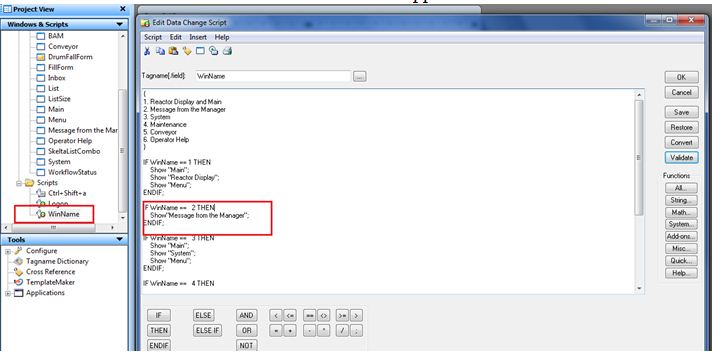

No
Passing Contextual Information in Forms from InTouch
You can pass real-time values from InTouch symbols to the AVEVA Work Tasks InTouch FillForm symbol.
Passing Contextual Information in Forms from InTouch, through attributes, is supported only for String data type.
Requirement
From InTouch Windows viewer, the run time values of InTouch symbols should be able to populate in a AVEVA Work Tasks form symbol at a predefined event.
Procedure
The steps to achieve this requirement will be explained with the Reactor Demo example that can be created by default while creating Galaxy.
- Create the form to be filled on the Intouch event in the repository that is connected to the WorkflowGateway object. In this example, a "DrumFall" form is created with two text inputs that will display the Drum count and the Conveyor speed.
- From the ArchestrA IDE, create a UDA of the type string and user writeable to the WorkflowGateway object.
- From the ArchestrA IDE, open the WorkflowGateway object instance and select the graphics tab. Create a new graphic object named DrumFallForm.
- Double-click the symbol name and open the ArchestrA graphic symbol editor.
- On the top of the graphic editor, click on the Embed Graphic icon which will pop up the Galaxy Browser.
- Select the Graphic Tool box icon on the top left corner of the Galaxy Browser.
- Select the FillFormControl symbol and click OK.
- Click on the graphic editing area which will paste the FillForm symbol in the editor.
- Double-click on the graphic symbol to configure. Provide the form name to be filled.
- Click on the DataBinding tab of the Animations window. For the "InputXML" field, click on the button in the "Reference column".
This opens the Galaxy Browser.
Note: The value from the Value script takes precedence over the InputXML (that is the value for the controls) and the Default Value, and the InputXML takes precedence over the Default Value for the controls on the form.
- From the Galaxy Browser, select the object on which the UDA "DrumFallEventXML" was created and press OK.
- Click OK and then click on Save and Close on the Graphic Editor.
This will successfully create the FillForm graphic control.
Deploy the WorkflowGateway object.
- Create a window in the InTouch window maker. Double-click on the ViewEngine object (aaReactorDemo) to open the windows maker.
- Create a new window from the windows maker by selecting File> New window, and name it "DrumFallForm". Set the Window type as "Popup".
- Right-click inside the window area and select "Embed ArchestrA Graphic". This opens the Galaxy Browser.
- From the Galaxy Browser, select the Object instances icon and select the instance to which the Fill Form control has been added. Double-click the "DrumFallForm" symbol. Click on the window area which will paste the symbol to the window.
- Next, create tags. From the Tools window, double-click to open the "Tagname Dictionary" and click on New.
- Type a name for the tag (DrumFallDataTag) and select the "type" as I/O "Message".
Set the Access Name property as "Galaxy".
In the Item property, give the name "Objectname.UDA" to which the tag should write values. (WorkflowGateway_002.DrumFallEventXML)
- Click Save and Close to save and close the Tagname Dictionary.
- Write the required script.
From the Windows and Scripts box, double-click to open the "WinName" script. The condition "WinName==2" is when the drum fall happens.

In this condition, first assign the data to the DrumFallDataTag created. The data should be in XML format which should match the syntax of the instance XML of the "DrumFall" form, when previewed. As the maximum length of an attribute in System Platform cannot exceed 1023 characters, pass only the XML for the required controls. Add the required dynamic values from the Drum Conveyor in the XML as shown.
For example,
DrumFallDataTag="<SKRootDefinition><TEXTINPUT1>"+Galaxy:Drum_Conveyor.DrumCount+"</TEXTINPUT1><ConveyorSpeed>"+Galaxy:Drum_Conveyor.Speed+"</ConveyorSpeed></SKRootDefinition>";
- Write the script to open the DrumFallForm window.
For example, Show"DrumFallForm";
- Click Validate and if successfully validated, save the script.
- Save all the open windows and exit the window maker.
- Deploy the ViewEngine object (aaReactorDemo).
Run the conveyor example. The form pops up.
- Open the InTouch viewer and login with the credentials.
- Click on the Open window and select the Conveyor window.
- Change the control from Auto to Manual, and manually transfer a drum and make it fall.
The DrumFallForm will get displayed with the current drum count and the conveyor speed at the time of fall.